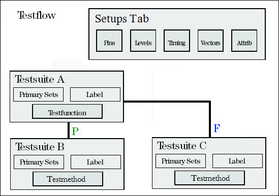

Testflow methodologies
To develop the testflow, you create global setup files and develop test suites which test a particular parameter at a time.
The global setup files are selected on the Setups page including pin configurations, timing, levels, vector and pin attributes. These setups are valid for the entire testflow.
Each test suite contains a test method. Primary sets (levels and timings) must be defined.

The testflow development is a "top-down" approach, where you consider the flow of tests you want to perform, create the flow based on the test suites, and then fill in the details for each test suite.
A major advantage of this approach is that it quite often reflects production test strategies, where specific test details are not determined.
Functional changes
- Introduced before SmarTest 6.3.2